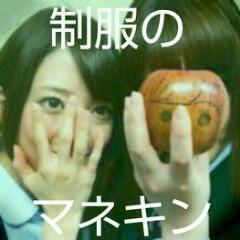
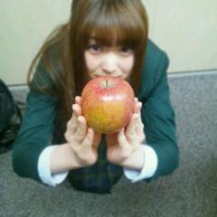

2012/1219Wed制服のリンゴっ(o・・o)
こんばんごっっ(o・・o)
さゆりんごっっ(o・・o)
ついに、明日！！！
乃木坂４６の４ｔｈシングル
制服のマネキンがリリースされます！
ってことで
りんご姫バージョンの
制服のマネキンをつくってみた(*^^*)
題して
「制服のリンゴ」

※このあと、林檎は美味しくご賞味しました。
もう手に入れた方も
いるんかなー＼(^^)／？
たくさん聞いていただけると
嬉しいです///
あと、松村の苦手克服...
頑張ったのでみてください！！(;o;)
ほんまに頑張ったんよー(;o;)
よろしくお願いいたします！

あと、
１９日放送の
ナニコレ珍百景に
生駒とでてます☆
よかったらみてくださいまし！！
めっちゃ笑えるでー＼(^^)／
ほなら、またねー＼(^^)／
さゆりんごでしたっっ(o・・o)/~
2012/12/19 00:54


コメント(450)
明日買いにいくよ！
制服のリンゴ
じゃなくて、、、
制服のマネキン
フラゲしたよーー！！
ナニコレ珍百景楽しみ！！！
まっちゅんの個人pvダイジェストは凄く面白かったから楽しみだな～(笑)
制服のりんごなかなかいいね☆
ななみん笑ってない(笑)
リンゴ姫のお願いなら、見るしかないな～(笑)
予告編見ただけで、楽しみすぎる(笑)
リンゴの
ご賞味いかがでしたか？
今日フラゲして制服のマネキンGETしました！
早速苦手克服、見たしたよ！
松村さん根性あるなぁ～って思いました！！
あっあと握手会も行くんでそん時はよろしくお願いします。(￣▽￣)
これからも頑張って行きましょう
りんご姫かわいいー！
この間のアメスタちゃんと見たよ！
どんだけパクチー食っとんねん！
笑いが止まんなかったわ(≧∇≦)
苦手克服のヘビもまた
笑って笑って笑いまくるんやろうな
楽しみー！
ほなまた
火曜曲見たよ！
珍百景も了解です！
生ちゃんブログで分かったので視聴してみたよ！
久しぶりに林檎が登場したね(*^。^*)
これからDVDの方も見るよー
楽しみやー！
制服のリンゴもマジ最高っす！うっす！
NAMERO
ナニコレ珍百景も
絶対見るわー(*^O^*)
林檎美味しそう(笑)
その、林檎バージョンも売っているの？笑
明日、発売日ですね！
よろしくです。
通勤途中にリンゴの木があるのよ。
きのうおじさんがリンゴを収穫してて、
今朝通ったら木の下にたくさん並べてあった。
毎朝リンゴに会えてうれしいのです。
こっそり顔を書いてしまいたくなるくらい。
リンゴの写真見てたら、そんなことを思ったのでした。
その後、まるかじりされたのでしょうか、
それとも、きれいに皮を剥かれたの
でしょうか？
珍百景楽しみですね。まぁ
なんとなく、乃木坂には珍百景あふれてる
よね。
噛み付いたり。変わった寝方だったり。笑
レコメンでのさゆりんの寝間着ピンクは
さすがアイドルと思いました。(^ ^)
そしてさゆりんの
苦手克服早く見たいよぉー
明日届くから
楽しみにしてるよ(o^^o)
おやすみ( ´ ▽ ` )ﾉ
さゆりんが入ってるのは何タイプかなー？？
ななみんとさゆりんの2shotも可愛いから通常盤もかわな！！
応援してます
りんご姫きてーーーあ
結構気に入ってるでしょ
りんご姫ｗ
もう手に入れてiPhoneに入れましたわ
んでへびどうなん？
ウロコとか意味わからんww
でうなぎになったよｗ
んでいまこけたよ。さゆりん
んでデカイヘビに変わったよ！
って持ってるやん
へびりんごだ！
ってさゆりんやれば出来る子
やるなー
んじゃね
明日やね！
今日フラゲできとったけど
外出しとって受け取りできんかったorz
じゃけん明日大学終わってから見るねー
制服のリンゴって...
なんかおもしろいんだかどうなんだか(笑)
前も同じような顔だったよな？
リンゴ食べたい！
ちゃんと録画しとくね＼(^o^)／
あくまで、ソコにこだわるんですね？www
センター試験の動画の年齢も、何故か13歳にこだわっていますね(=ﾟωﾟ)ﾉ
りんご姫は、何故13歳にこだわるんですか？(・・?)w
制服のマネキンって書いてあるよW
ナニコレ見まーす！！
制服のマネキン買いますね(^-^)
さゆりんの写真入ってるかな～(^O^)
テレビも観ますね(^_^)
フラゲしちゃいました☆
『制服のリンゴ』マグリットの絵みたいですw 好きな画家なのでなんかイイ♪
年末イベ全て行けませんがマネキン聴きながら応援してます(・ω・)
がんばる松村さんがホントに好きです☆
CD買って早速、
さゆりんの苦手克服
見させていただきました。
最初は全く小さいヘビすら
触れなかったのに
あんな大きなヘビを克服した
なんてビックリしました。(^_^)v
新曲も聞いたよ。
((o(^∇^)o))
イイ曲だったよ。(^_^)v
こんばんは(((o(*ﾟ▽ﾟ*)o)))
制服のりんご！笑
無茶ありすぎや
更新きてぁぁぁ
あっ！さっきのラジオ聞いたで
メール投稿したけど読まれんかった泣
フラゲしてきたよー
まっちゅんの写真コンプしたよー
へび見たよー
しりもちまでついて可愛かったー
明日はナニコレね
見るしかー
おろしまちゅむらしかー
えりりんしかー←
もうちょっとで握手やー
ほなねﾉｼ
苦手克服見たよー
明日見ようか迷ってんけど、見た(*･ω･)ﾉ
すごいおもろかった(^^)/
後から出てきた蛇の方がスゴくなかった？笑
と思ったけど皮むけば余裕でしたねｗ
ただいまマネキンはフライングゲットをして必死にＤＶＤ見てる最中です！
楽しみは取っときたい派なのでさゆりんの最後に見るよ！
みんなの見てそこまでたどり着くのに3時間くらいかかるよ！ｗ
とにかく明日発売ってことでまた4thでも躍進できるようにがんばりましょ
この前のアメーバのやつのハーフツインテールが可愛すぎて
画面の前で
「なんだこいつぁ・・・
俺はなんでも好きな女の子の理想を叶えてくれる
二次元の世界に迷い込んだか・・・？」
って悶えてたたっくんでした笑
りんご姫最高にかわいいですぇ～ﾁｭｯ♪(〃^)(*￣▽￣*)vﾞ
「制服のマネキン」とうとう発売ですね
１９日のナニコレ見ますねぇ～(｀・ω・´)
りんご姫の雄姿を拝見しますねぇ(〃´・ω・`)ゞえへへっ♪
じゃぁこのへんで・・・・
林檎姫 ｷﾚｲﾅｶﾐﾀﾞﾈ( ￣▽￣)ｏ川〃∇)ｷｬｧ♪
ヾ(｡･ω･｡)ヾ(｡･Д･｡)ヾ(｡･ρ･｡)ﾊﾞｲﾊﾞｲ♪
TVで制服のマネキンを聴く度に癒されとりますｗ
寒い日が続くけど風邪をひかないように頑張って！＞＜9
制服のリンゴかわいいー
この前のアメーバの番組、めっちゃ面白かったー（笑）パクチーあんな頬張る人初めて見たよ
明日の珍百景も楽しみにしてるねー！！
あと、２７日のzeppでのコンサート、今から楽しみ
苦手克服ＰＶ
あんなもん克服せんでも‥って
思ってたけど
頑張ったんやねぇ(´ω｀。)
えらいっ(*^ーﾟ)b
通常盤がりんご姫バージョンで届くの
楽しみにしております(o*´∇｀)o
ナニ珍も楽しみ～♪
ほにゃら(*^ー^)ﾉｼ
楽しみだよ
制服のマネキンのＰＶでまっちゅんのあんなに
まじめな顔ははじめてみた
いつものまっちゅんを思い出して
吹きだしてしまった。
(^-^*)/
いよいよ発売日になりましたね♪
昨日、予約してあったから一日早く手にする事ができたよ♪
全Type買ったから、お休みの今日は、ゆっくり・じっくり見て楽しもぅとおもいますo(^-^)o
さゆりん×ヘビの戦いの完結も楽しみだよ☆
予告は完全に逃げてるだけだったけどね（笑）
でも、さゆりんの頑張りは、めっちゃ伝わって来そうだね！
この前のアメーバの見たよ (*^^*)＊巻き髪ハーフツインいいね！上品な感じがいかにもりんご姫って感じだった！
ピータン食べる前にチュッてしてたのと口に入れてからのパクパクしてたの可愛すぎ (*´з｀)ピータン羨ましいわ…ww
あと、パクチーが口からはみ出てたのも可愛かった(*´∀｀)
お礼がお仕置きになってたのも個人的にツボでした(≧▽≦)ドSなさゆりんを垣間見たよ(*´Д｀*)
カメラに貪欲で可愛いし芸人並みの天性の面白さとセクシーさも兼ね備えてもっと好きになってしまった (〃▽〃)
MJ、乃木どこも見たよ！
うちも小さい頃サンタさんに電話したことあるー(^^)フリーダイヤルではなかったけども笑
乃木どこの最後のコメント吹いた(o≧▽≦o)泣きながら、ちがう～てぴょんぴょんしてたのが愛くるしすぎて生きるのが辛い(*´Д｀*)
というわけで握手会行ったらお仕置きリクエストいい(o>_<o)？
明日のナニコレ期待っ！
楽しみにしてる(^_^)
まっつんだけなんか違和感がすごいのですが・・・w
アメーバ特番の髪型、可愛さに悶絶しました☆
握手会はアレンジしたり出来るみたいですが行けない人間からするといつもと違うとかなり嬉しいです(・∀・)
夜分遅くにコメントいたします笑。
やっとバイト終わって風呂入って布団なう。です。
気付いたら日が変わって19日!
待ちに待った
制服のりんご
発売だ?(o^∀^o)
(・◇・)？
何か違うヾ(´・ω・｀)
そーだ!!
制服のさゆりん
だ笑。
いやこれも違う(ヾ(´・ω・｀)
そーです
制服のマネキン
遂に発売だ(o^∀^o)
早速朝起きたら
初回盤ABC全部買ってから大学行こう(￣∀￣)
んで奇跡的にバイト無いから珍百景で
さゆりんを拝もうかな(o^∀^o)笑。
制服のマネキン発売ってことは？
待ちに待った握手会がクルーー!!(・◇・)
楽しみだな(￣∀￣)
12月の名古屋個別、京都全握
2月の京都個別行くよ?(o^∀^o)
では
おやすみなさい(^_^)
ぴよすけ38
そのバージョンはどこで買えますか？
さゆりんこんばんごー(^O^)／
ameba見たよー！
りんご姫中々暴走してたね（笑）
まぁ可愛いからいいんだけど(^ ^)
あっきーは13歳のくだり好きだよ（笑）
制服のマネキン早く届け〜(ｰｰ;)
明日来ないかなぁ？
それじゃあまたねー♫
大分のあっきーより
さゆりんの苦手克服観るに決まってる!!!!!
毎日、10回は観ます～♪
ナニコレ珍百景絶対観ます！！
そのジャケもいいね（笑）
明日買うよー絶対！
林檎姫バージョンおもろいな（笑）
苦手克服早く見たいです。
ダイジェスト？の動画の時点で結構おもしろかったからなおさら楽しみや！
あっあと明日珍百景絶対見るわ( ´ ▽ ` )ﾉ
腹抱えて大爆笑します。
また更新待ってんでぇo(^▽^)o
てなわけでおやすん( ´ ▽ ` )ﾉ
ヽ(^o^)丿 口調が可愛かったり、おばちゃんになったりと
尻もちついて、最後には首に巻いてスゴイぞ～感動した(T_T)
乃木どこでは最後に大泣きして何を言うのかと思ったら
ちがう～ カワイソウ過ぎてもうヒットしなくて良いと思う
大爆笑だ～ ＼(^o^)／ 最後においしいとこ持ってったぞ
りんご姫でジャケット作るなんてセンスがイイ！ 奈々未ちゃんも
入っているし、 今回初めて１００枚超えたから、一枚くらいこのタイプ入っているよね？
明日観るから～ では、また
コメントする